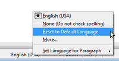

OpenOffice.org 3.3 New Features
Productivity Enhancements
New Custom Properties Handling
OpenOffice.org allows users to define any number of custom document properties as name/value pairs in the File > Properties dialog. With version 3.3 it is possible to also define DateTime values and values that contain a duration.
{kind=link}
Embedding of Standard PDF Fonts
In previous versions, the standard PDF standard fonts (Times, Helvetica, Courier, Symbol and ZapfDingbats) were only embedded into the resulting PDF when the resulting file was of the PDF/A type, since the PDF/A standards requires this. In version 3.3, you can optionally embed these fonts in all PDF documents created by OpenOffice.org to enhance display accuracy in PDF viewers.
New Narrow Font Family
Oracle contributed a narrow font family to the free and open source Liberation font families. Being metrically compatible to the Arial Narrow font, widely used on Microsoft Windows systems, this font family now completes the Liberation family and delivers a compatible and free set of fonts available on all platforms.
Increased Document Protection in Writer and Calc
OpenOffice.org Writer and Calc now allow two levels of document protection. As before, you can save a document with a password that prevents unauthorized users to read the content. Now you can also set a password to protect a document against unwanted changes.
{kind=link}
This way, you can make the content of a document available for reading to a selected group of people, and for reading and editing to a different group. This behaviour is now compatible with Microsoft Word and Excel file protection.
Automatic Decimals Digits for "General" format in Calc
In OpenOffice.org Calc, numbers formatted with the "General" number format will display as many decimal digits as required. In former versions, a maximum of 2 decimal digits were displayed with the "General" number format.
1 Million Rows in a Spreadsheet
OpenOffice.org Calc spreadsheets now support 1,048,576 (1 Million) rows instead of 65,536 rows.
New Options for CSV (Comma Separated Value) Import in Calc
Two new options are available when importing CSV files that contain data separated by specific characters.
{kind=link}
These options determine whether quoted data will always be imported as text, and whether OpenOffice.org Calc will automatically detect all number formats, including special number formats such as dates, time, and scientific notation. The detection depends on the language settings.
Insert Drawing Objects in Charts
The Chart functionality is enhanced and now supports drawing objects. The drawing toolbar allows to insert simple shapes such as lines, rectangles and text objects and even complex shapes such as cubes, symbols, block arrows, flowcharts and stars. The drawing objects can be edited by several dialogs which can be opened via the context menu. Also the font and formatting of text objects can be changed.
{kind=link}
For further details of this new feature please see the GullFOSS blog article.
Hierarchical Axis Labels for Charts
If the categories in charts that get their data from spreadsheet span multiple rows and multiple columns, the direction of the first data series is detected. If the data for the first series comes from rows, the categories are split into multiple rows. Otherwise the categories are split into multiple columns. The split categories are then applied as different hierarchical labels at the x-axis.
{kind=link}
For charts with own data (typically used in Impress or Writer), there is a new icon to add text columns, which then will be used for the different levels in the x-axis labels.
{kind=link}
For further details of this new feature please see the GullFOSS blog article.
Improved Slide Layout Handling in Impress
Handling of slide layouts in presentations is vastly improved. The content type of slide sections is now defined directly on the slide by clicking on one of the four content type icons: table, chart, picture, or movie, or entering text directly.
{kind=link}
This reduces the number of slide layout varieties making the layout selection much clearer. In addition, you can now also assign layouts to slides and create new slides with a specific layout using the toolbar. One new toolbar element is used to add a new slide (or duplicate the currently selected slide).
{kind=link}
A similar toolbar element is used to assign a layout to the currently selected slide, or reset the layout to the assigned layout after making changes.
Manual Setting for Primary Key Support for Databases
When connecting to a database via an ODBC, JDBC, or ADO driver, Base used to apply a heuristic method to determine whether the database supports primary keys. In some cases, this heuristic method failed. Therefore, version 3.3 introduces an explicit option to declare primary key support. When this setting is enabled, Base will always assume that the database supports primary keys, regardless of the result of the heuristic analysis.
Support of Read-Only Database Registrations
In OpenOffice.org, database registrations are stored in the application configuration files. Therefore, it is possible to deploy additional configuration fragments containing additional registrations. If those configuration fragments are declared as read-only (by using the usual configuration mechanisms for this), OpenOffice.org now blocks modifications (editions, removal) of the corresponding registration entry.
New Math Command 'nospace'
It will now be possible to explicitly remove the small horizontal space that
always gets applied between two elements. The syntax is
nospace { el1 el2 ... }
Usability and Interface
Common Search Toolbar
Usage data indicated that a large portion of OpenOffice.org users want to quickly search inside a document's text. This is now possible using the new "Find" toolbar containing a search field, and a next and previous button.
{kind=link}
New Easier to Use Print Interface
The print dialog has been completely revamped in OpenOffice.org 3.3 to allow for a more efficient and usable printing experience.
{kind=link}
An integrated preview is available to show the appearance of the document to be printed, and all relevant settings can be made from within this one dialog, including number of pages, collation settings, document objects to print or hide, page order, print multiple pages, and much more.
For further details of this new feature please see the GullFOSS blog article.
More Options for Changing Case
With version 3.3, you have more options for changing the case of a selected text portion. Apart from toggling uppercase and lowercase, you can now set the case to sentence case (first letter capitalized), capitalize every word, or invert the current case.
Redesign of Thesaurus
The thesaurus dialog has been redesigned for better usability. In addition, a new "Synonyms" sub menu in the default context menu allows you to select a synonym for the currently selected word right away.
{kind=link}
Resetting Text to the Default Language in Writer
 You can now reset the language of text back to the default language using the language status bar or the Tools > Language menu.
{kind=link}
Text Rendering of Form Controls in Writer
Form controls in text documents now render their text the same way the document itself does, thus making the appearance of controls as part of a text flow much more seamless and consistent.
Changed Defaults for Charts
Several defaults have changed for OpenOffice.org charts: larger size, larger font size, no black borders, better 3D look and more.
Colored Sheet Tabs in Calc
Each sheet in an OpenOffice.org Calc document can now be assigned a color for its tab in the Sheet tabs area at the bottom left of the window.
{kind=link}
Adapt to Marked Selection for Filter Area in Calc
 In OpenOffice.org Calc, a selection is now shrunk to the actually used data
columns when enabling a filter (AutoFilter, StandardFilter,
AdvancedFilter).
In OpenOffice.org Calc, a selection is now shrunk to the actually used data
columns when enabling a filter (AutoFilter, StandardFilter,
AdvancedFilter).
Users can select an entire row by clicking on a row header and expect a filter to operate on the data below the selected row. If one single row is selected the selection is shrunk to the actually used data columns and then expanded over all contiguous data rows below. Selecting only a portion of a row behaves similar by expanding the selected columns over the data rows. An area selected, e.g. more than one entire row, is shrunk to the actual used data columns.
Sort Dialog for DataPilot in Calc
The DataPilot (sometimes known as Pivot Table) now supports a convenient way of sorting and filtering entries using a special popup window.
{kind=link}
For further details of this new feature please see the GullFOSS blog article.
Display Custom Names for DataPilot Fields, Items and Totals in Calc
DataPilot fields, items and totals can now be assigned custom display names by typing into the corresponding cell in the DataPilot table.
Internationalization
Additional Locale Data
Arabic (Algeria) [ar-DZ], Bafia (Cameroon) [ksf-CM], Bushi (Mayotte) [buc-YT], Campidanese (Sardinia) [sro-IT], Gallurese (Sardinia) [sdn-IT], Gikuyu (Kenya) [ki-KE], Latgalian (Latvia) [ltg-LV], Logudorese (Sardinia) [src-IT], Maithili (India) [mai-IN], Malagasy Plateau (Madagascar) [plt-MG], Maore (Mayotte) [swb-YT], Papiamentu (Netherlands Antilles) [pap-AN], Rusyn (Slovakia) [rue-SK], Rusyn (Ukraine) [rue-UA], Sassarese (Sardinia)[sdc-IT], Sorbian, Tahitian (French Polynesia) [ty-PF], Upper Sorbian (Germany) [hsb-DE], Yoruba (Nigeria) [yo-NG]
Developer Features and Extensibility
Grid Control Enhancements
The grid control now accepts additional data types like numbers or images. The XGridDatamodel method
addRow(string headerName, sequence<string> data)
has changed to
addRow(string headerName, sequence<any> data)
You can now control the appearance of a grid control using additional parameters for horizontal and vertical alignment, row background colors, line colors, and text colors For more information and examples, see the OpenOffice.org Wiki pages.
New MetaData Node for Database
You can now define a new property in a database driver's xcu file. This is enabled by default for MySQL (JDBC) and ADO (including Microsoft Access) drivers. The property is defined in the MetaData section.
<node oor:name="SupportsColumnDescription" oor:op="replace">
<prop oor:name="Value" oor:type="xs:boolean">
<value>true</value>
</prop>
</node>
When this property is enabled, the table designer will display the column description beside the normal description which is used as help text.
Extending Database Drivers Using Extensions
Some database drivers do not support special features like altering view definitions or adding/dropping table keys. Starting with OpenOffice.org 3.3, the corresponding interfaces can be implemented by an extension:
com.sun.star.sdb.tools.XViewAccess com.sun.star.sdb.tools.XTableRename com.sun.star.sdb.tools.XTableAlteration com.sun.star.sdb.tools.XKeyAlteration com.sun.star.sdb.tools.XIndexAlteration
For more details on the implementation of this feature, please see the corresponding section in the OpenOffice.org Developer's Guide.